Scientific Classification
| Kingdom | Animalia | Animalia | Animalia |
|---|---|---|---|
| Phylum | Chordata | Animalia | Animalia |
| Clade | Theropoda | Animalia | Animalia |
| Clade | Coelurosauria | Animalia | Animalia |
| Clade | Maniraptora | Animalia | Animalia |
| Clade | Paraves | Animalia | Animalia |
| Clade | Avialae | Animalia | Animalia |
| Order | Dolarakiformes | Animalia | Animalia |
Taxonomic note: The classification of Dolarakiformes has been a subject of considerable debate among Kaimeran naturalists. Their combination of derived avian characteristics and apparently archaic anatomical features has made their precise evolutionary position difficult to establish. In particular, their feather structure, flight apparatus, and specialized pectoral anatomy appear inconsistent with the retention of such features as clawed wings, abundant teeth, and a long bony tail.
01 · INTRODUCTION
Overview
The Dolarakiformes are a distinctive clade of feathered theropods native to Kaimere, with their greatest diversity concentrated in the temperate forests and wetlands of Pakardia. Although they possess many characteristics associated with birds, including elaborate plumage, powerful flight muscles, and the ability to fly in most of their constituent lineages, firebirds remain anatomically distinct from both neornithine birds and enantiornithines. Their long, bony tails, clawed wings, and unusual hindfoot morphology set them apart from other feathered animals inhabiting the Known World.
Firebirds occupy an unusual position in Kaimeran natural history. Their anatomy combines features that would ordinarily be associated with several different groups of feathered dinosaurs, making their classification a subject of continuing debate. Some naturalists consider them primitive birds, while others regard them as an unusual radiation of dromaeosaur-like theropods. The prevailing interpretation places them among the derived stem birds, descended from animals resembling Archaeopteryx, although the precise relationships of the order remain unresolved.
Their common name derives from the iridescent yellows, oranges, reds, and golds characteristic of many species, particularly the spectacular common phoenix of Pakardia. Yet the name also carries cultural significance. Several firebird lineages, especially the venomous raptorial urvogels, occupy prominent positions in Pakardiant religion and folklore. These animals are associated with fire, cleverness, transformation, and the relationship between humanity and the natural world.
Despite their shared ancestry, Dolarakiformes are remarkably diverse. Their principal radiations include the seed-specialized phoenixes, semi-aquatic grebe-like firebirds, and venomous raptorial urvogels. Other lineages have evolved insectivorous, canopy-dwelling, terrestrial, and marine lifestyles. Some are small, agile fliers of the forest canopy; others are formidable predators capable of hunting large terrestrial or aquatic animals.
The order is particularly successful in Pakardia, where its members have persisted through successive waves of ecological turnover that eliminated many of the island's endemic megafaunal lineages. Firebirds remain among the most characteristic animals of the island, contributing to its ecology through seed dispersal, predation, and the occupation of niches otherwise dominated by mainland birds and theropods.
02 · DEEP TIME
Evolutionary History
Origins in Kaishel
The origins of Dolarakiformes lie in the distant southern continent of Kaishel, where the order evolved among the forests and coastal ecosystems of a world considerably different from modern Kaimere. Kaishel remains the principal center of firebird diversity, possessing several lineages that are absent from Pakardia and the Known World. This distribution strongly suggests that the continent represents the ancestral homeland of the order.
The exact ancestry of firebirds remains uncertain. Their long, stiff tails, extensive dentition, and unusual hindlimb morphology appear at odds with their highly derived feathers, powerful flight muscles, and pronounced sternal keels. These combinations of characteristics have complicated attempts to establish their position within Theropoda.
Most contemporary studies interpret firebirds as a derived clade of stem birds, descended from an animal broadly comparable to Archaeopteryx. Under this hypothesis, many of their distinctive characteristics evolved independently of those seen in modern birds. Their similarities to dromaeosaurs, particularly their clawed wings and predatory adaptations, are interpreted as either retained ancestral traits or convergent developments.
Alternative interpretations remain in circulation. Some naturalists consider firebirds more closely related to modern birds, while others argue that their ancestry lies farther back among troodontid or dromaeosaur-like theropods. Their fossil record, particularly that of Kaishel, is poorly understood, and the question remains open.
The prevailing consensus nevertheless favors a stem-bird origin, with firebirds representing an independent radiation of feathered theropods that developed many of the adaptations associated with modern avian life.
The Pakardio-Khalin Plate and the Isolation of Pakardia
Firebirds reached Pakardia through the movement of the Pakardio-Khalin plate, a microcontinental fragment that separated from Kaishel approximately forty million years ago.
Pakardia is the easternmost emergent remnant of this plate. During its northward drift, it carried an assemblage of plants and animals derived from Kaishel, including firebirds. The plate remained isolated long enough for many of its inhabitants to undergo independent evolutionary radiations.
For roughly twenty-five million years, the Pakardio-Khalin plate traversed latitudes characterized by warmer conditions. Despite this climatic transition, the firebirds and other transported lineages remained established on the island. Their isolation encouraged the development of distinctive forms adapted to Pakardia's forests, wetlands, and coastal environments.
The order subsequently diversified into several major ecological groups. The most basal representatives belonged to Dolarakidae, while more derived lineages developed specialized feeding and locomotor adaptations. The resulting fauna included terrestrial and volant predators, aquatic hunters, and increasingly specialized seed-eaters.
Although Pakardia's firebirds originated from Kaishel, the relationship between the two regions was not necessarily entirely one-way. Some firebird lineages may have dispersed between the continents, and a few modern Pakardiant groups could conceivably have originated through later movements from the island. Nevertheless, the presence of several exclusively Kaishelian clades supports the interpretation that the continent was the order's original center of diversification.
The Major Radiations
Two principal firebird groups are recognized in Pakardia: Dolarakidae and Pyropavidae. These represent distinct evolutionary radiations, although their relationships and the exact boundaries between the major groups remain subjects of taxonomic discussion.
Dolarakidae contains the most basal representatives of the order and includes the Dolarakinae, or raptorial urvogels, as well as the Limnedolarakidnae, the aquatic firebirds commonly known as Pakardiant grebes. These animals retain teeth and lack the fully developed beaks characteristic of the more derived phoenixes.
The raptorial urvogels developed into specialized predators, with several lineages evolving venomous saliva, powerful grasping feet, and adaptations for silent hunting. Others developed unusual skulls and dentition for feeding on wood-boring insects. Their ecological diversity reflects a long history of specialization within the forests of Kaishel and Pakardia.
The aquatic firebirds evolved a different set of adaptations. Their feet, wings, and body proportions support a lifestyle centered on fishing and diving, with several species becoming highly successful in Pakardia's extensive wetlands. Their resemblance to grebes, anhingas, and other aquatic birds reflects adaptations to similar environments rather than a close relationship with those animals.
Pyropavidae, the phoenixes, represent the most derived and abundant firebird family in Pakardia. They have lost their teeth entirely and evolved beaks superficially comparable to those of true birds. Their principal specialization is the consumption of seeds, berries, and other plant material, particularly that produced by the island's temperate rainforest conifers.
Phoenixes became important ecological partners of Pakardia's forests. Unlike large herbivores such as titanosaurs, which influence vegetation through browsing, trampling, and the destruction of trees, phoenixes are particularly effective at dispersing seeds from mature, healthy plants. Their feeding behavior allows them to transport seeds across the forest and into nearby islands, helping maintain the distribution and regeneration of many tree species.
The Dynastic Extinction and Pakardia's Ecological Renewal
The Dynastic Extinction approximately fifteen million years ago was one of the most severe regional extinction events in Pakardia's history. It eliminated much of the island's dominant megafauna, including the large parasauropods and coelophosaurs that had previously structured its terrestrial ecosystems.
The extinction resulted from multiple interacting environmental disturbances. Rapid uplift altered rainfall patterns, volcanic eruptions covered landscapes in ash, and tectonic shifts reshaped coastlines through marine transgressions and regressions. Seismic instability fragmented habitats, while volcanic aerosols contributed to climatic fluctuations and disrupted primary productivity.
The extinction unfolded over millennia rather than as a single catastrophic event. Herbivores dependent upon stable forest corridors were likely among the first to decline, followed by predators as their prey populations collapsed. Pakardia's isolation magnified the effects, as its fauna had relatively few opportunities for recolonization from other regions.
Yet the extinction also created the conditions for a major ecological renewal. Fertile volcanic soils supported vigorous forest recovery, and surviving small-bodied and mid-sized animals expanded into the vacant niches. Small parasauropods increased in size, fabadonts diversified, multituberculates radiated, and parankylosaurs persisted as heavily armored browsers. Elasmarians filled many of the mid-to-large herbivore roles.
Firebirds were among the survivors and beneficiaries of this turnover. With the extinction of the coelophosaurs, several raptorial urvogel lineages expanded into vacant predatory niches. For a time, the genus Archedolorakos became one of Pakardia's dominant predator groups, with species ranging from relatively small, social hunters to enormous terrestrial predators.
For nearly twelve million years following the Dynastic Extinction, Pakardia maintained a comparatively stable endemic ecosystem. Occasional migrants arrived from mainland Arvel and Ni'Khar during periods of changing sea levels, but the island's fauna remained largely self-contained. This period represents Pakardia's long middle age of ecological equilibrium, during which firebirds continued to diversify alongside its endemic herbivores and predators.
The Pleistocene Harvest and the Survival of Firebirds
Approximately 1.5 million years ago, a reduction in Kaimere's axial tilt altered the planet's climate. Seasonal extremes diminished, but latitudinal contrasts intensified. Polar regions cooled, subtropical high-pressure systems strengthened, and atmospheric circulation became more pronounced.
For Pakardia, these changes contributed to colder conditions in southern latitudes and increased accumulation of ice at high elevations and possibly in the polar regions. Sea levels fell as water became sequestered in ice and ocean temperatures declined. Continental shelves were exposed, creating intermittent connections between Pakardia and neighboring landmasses.
These connections enabled mainland fauna to enter the island. The migrants included wolves, hyenas, pronghorns, red panthers, and other continental animals shaped by the ecological pressures of the Pleistocene. Their arrival coincided with declining primary productivity in some regions of Pakardia, further destabilizing its endemic ecosystems.

The island's native megafauna, having evolved under long isolation and relatively stable climatic conditions, proved poorly equipped to compete with many of these newcomers. Parasauropods disappeared entirely, larger elasmarians declined sharply, and only the smallest and most generalized endemic lineages survived.
Pakardia consequently became part of the Pleistocene Harvest, a wave of faunal introductions from mainland Arvel and, through portal-mediated transfers, lineages originating in Pleistocene Asia.
The extinction did not completely erase Pakardia's native fauna. Certain elasmarians persisted, while descendants of the hippoalectryons later achieved gigantism. Nevertheless, the modern island's megafaunal assemblage is predominantly continental in ancestry.
Firebirds were among the important exceptions. Their established populations survived the turnover and expanded into ecological niches that many mainland birds could not readily occupy. Their long evolutionary history on Pakardia, combined with their specialized feeding and predatory adaptations, allowed them to remain prominent even as the island's wider ecological architecture was transformed.
The phoenixes, in particular, benefited from the continued presence of Pakardia's temperate forests and coniferous vegetation. Although the island experienced substantial floral turnover during the last five to ten million years, the firebirds adapted to changing plant communities and maintained their role as important seed dispersers.
Flight and Ecological Specialization
Firebirds vary considerably in their flight capabilities. Most are capable of powered flight, although their performance differs from that of modern birds. Their long bony tails, clawed wings, and generally robust bodies impose limitations on sustained flight, while their powerful flight muscles and specialized feathers support rapid and agile movement.
In broad terms, firebirds are best regarded as fast, maneuverable fliers rather than exceptionally efficient long-distance fliers. Many are well suited to navigating dense forests, where acceleration, precision, and the ability to maneuver between trees are more valuable than prolonged cruising flight.
This distinction helps explain their continued success in Pakardia. The island's temperate forests offer a wide range of habitats in which agile flight is advantageous, while many true birds are better adapted to open environments. Nevertheless, firebirds are not restricted to forests. Several species inhabit southern Pakardia's grasslands and coastal regions, and the island's open habitats support a mixture of firebirds and true birds.
Some lineages are capable of sustained flight over considerable distances. The jackalbirds, for example, have developed more efficient flight than many other raptorial urvogels, allowing them to spread through the southern islands, Arvel, Kairul, and even parts of Ni'Khar. Others, such as the common phoenix, are less capable fliers and remain strongly dependent upon forest cover.
The aquatic firebirds exhibit a different balance of adaptations. Their wings and feet both contribute to swimming, while the tail serves primarily as a steering structure rather than a source of propulsion. Their flight is often less impressive than their aquatic performance, although some species can remain airborne for several hours when necessary.
Firebirds in the Modern Ecosystem
The modern Dolarakiformes encompass a broad range of ecological roles, from seed dispersers and insectivores to terrestrial and aquatic apex predators. Their diversity is particularly evident in Pakardia, where the order remains an important component of both the island's endemic wildlife and its cultural identity.
The phoenixes are among the most important agents of forest regeneration. Their consumption and dispersal of conifer seeds helps sustain the temperate rainforest, while their relationship with particular trees has produced striking examples of ecological specialization. The green phoenix, for instance, is closely associated with the Pakardiant redcedar, whose berries appear to germinate more successfully after passing through the bird's digestive system.
The raptorial urvogels occupy a very different ecological position. Their venom, grasping feet, and specialized hunting techniques make them formidable predators, while their intelligence and social behavior have contributed to their unusual prominence in Pakardiant folklore. Some species are semi-domesticated and used in hunting, although their demanding behavioral needs make them difficult companions for outsiders unfamiliar with their care.
Aquatic firebirds dominate or share many of Pakardia's wetlands, lakes, and coastal waters. Their predatory role is particularly pronounced in the highlands, where the aquatic urvogels are among the most abundant native hunters. Other firebird lineages have expanded beyond Pakardia, establishing populations in temperate wetlands and forests across the Known World.
Firebirds therefore represent one of Kaimere's most distinctive evolutionary radiations: an ancient lineage of feathered theropods that survived repeated ecological upheavals, diversified into an extraordinary range of forms, and continues to thrive alongside the more familiar birds of the modern world.
03 · SPECIES ACCOUNTS
Known Diversity
The following accounts document representative dolarakiformes recorded in the encyclopedia. Select a species to consult its individual natural history and descriptive account.
Green Phoenix
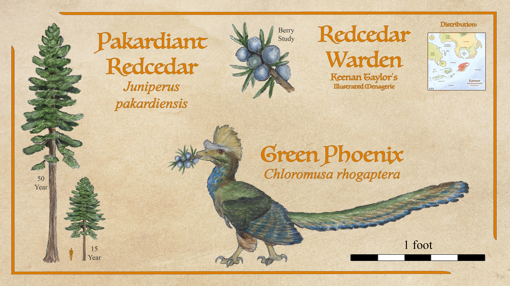
Chloromusca rhogaptera
The crested or green phoenix is inextricably linked to the Pakardiant redcedar, a species of juniper and one of the more abundant large trees in Pakardia. The berries are large and while the seeds don't have to pass through a phoenix to grow, they certainly seem to grow faster and healthier after this process. The tips of green phoenix wing and tail feathers end in blue spots clearly reminiscent of juniper berries.
Read species article →Macebreaker Phoenix
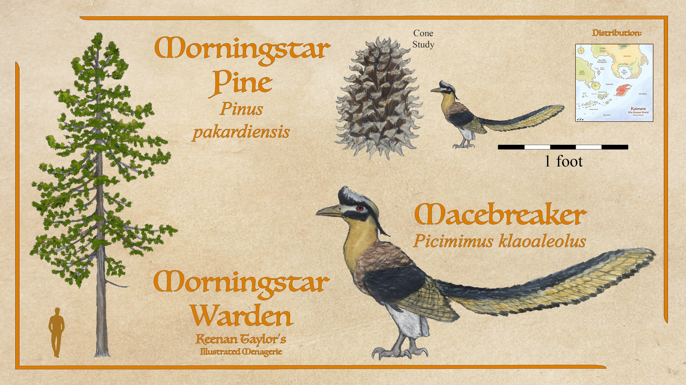
Picimimus klaoaleolus
The macebreaker phoenix is a common member of the pinecone specialist clade. They feed exclusively on the seeds of the Morningstar pines, so named for their enormous clawed cones. Macebreaker phoenixes are much smaller than these cones, and pry out seeds using a long notoriously powerful beak. They make intricate nests of woven twigs and filaments, often braided into the branches of sturdier and larger trees than Morningstar pines. Nesting in other trees than they feed on benefits the Morningstar pines since it further disperses their seeds. Macebreaker is a popular character in Pakardiant folklore, regarded as clever for using the right tools to defeat a much larger and terrifyingly armed opponent and weaving such intricate nests. The reality is phoenixes aren't notably intelligent and macebreakers rely on anatomy and instinct, yet their reputation remains and they are a popular patron spirit for craftsmen.
Read species article →Common Phoenix
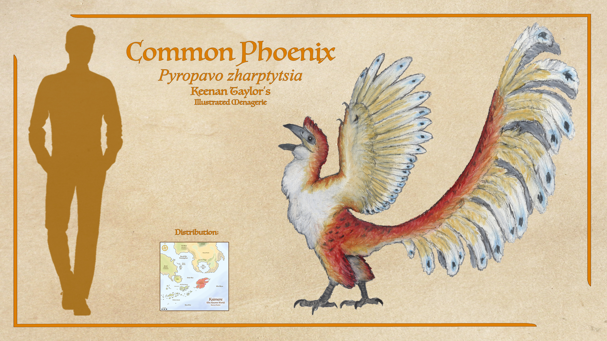
Pyropavo zharptytsia
Largest of the phoenixes, the common phoenix or Pakardiant peafowl, is a generalist. They still feed on berries, though their greater size means they can't afford to specialize. They feed on a range of juniper berries, along with other fruit and seeds, insects, and occasionally small game such as rodents, songbirds, and multituberculates. They aren't particularly good fliers, though they can swiftly scale tree trunks. Because of their reliance on forests for food, and aren't safe without nearby trees, they aren't found in Pakardia's arid southern coast or close to lowland settlements, but they are still quite abundant on the majority of the island. Their iridescent red, gold, and blue feathers are sacred to the Pakardiant and admired for their beauty throughout the known world. It is for this, and the iridescent feathers of some related animals, that firebirds is the translation of this clade's common name.
Read species article →Makhos and Serdic Snakebird
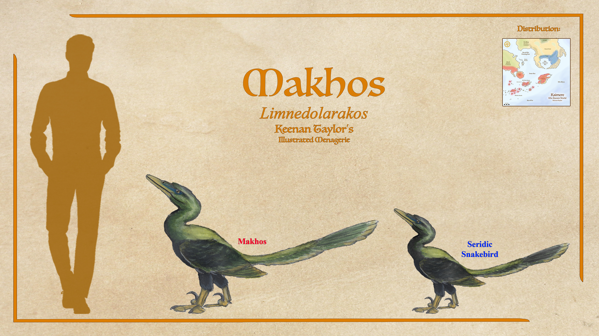
Limnedolarakos sp.
Most abundant of these is the Pakardia is the makhos. These live quite like anhingas, diving for fish in shallow water. While they can also be found in the lowlands and even out in the Gulf of Iratame, they are everywhere in the highland lakes. Oily feathers repel water, aiding in their rapid attacks. They stick to the shallows, rarely diving deeper than a few meters. While they aren't particularly strong fliers, they can fly for several hours at a time if the situation demands it.
These firebirds also migrated to Ni"khar and occupy the Seridic weltands. Its believed they arrived during the great turnover ending the Anchored Period, coming north from Pakardia and has been very successful, thought to have either taken a vacancy or directly outcompeted a fossil darter between the common and great anhinga in size. They aren not particularly good distance fliers, but are fast and capable of powerful bursts.
Read Makhos article → Read Seridic Snakebird article →Indrakhos
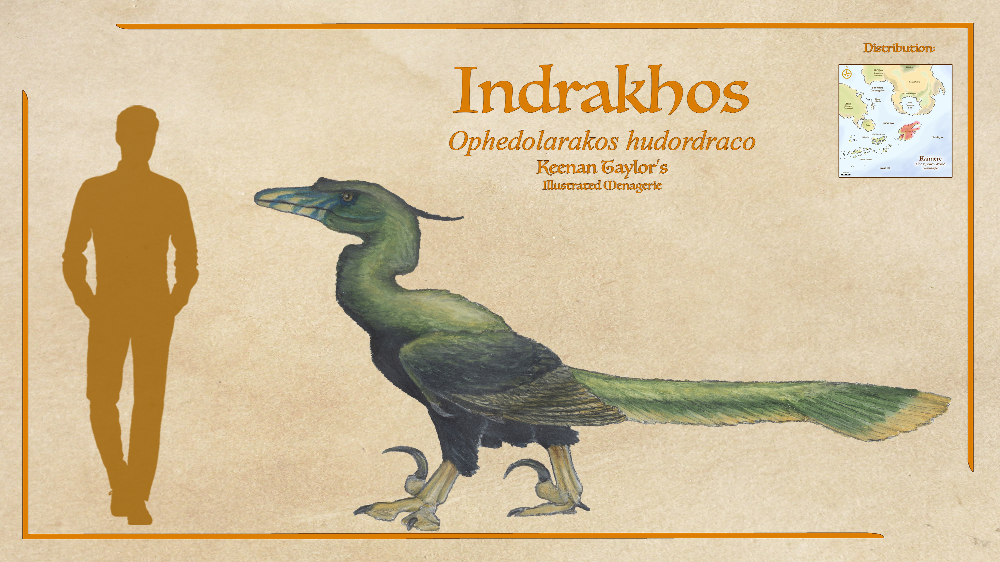
Ophedolarakos huordraco
The indrakhos is a flightless and much larger cousin of the makhos in Pakardia. Like the makhos, these birds dive for fish, though also hunt birds, small mammals, and other aquatic animals in their habitat. At up to two hundred pounds they generally don't view people as prey, though there have been records of them attacking children. They also can be found in the lowlands and mangroves of the gulf, though like their cousins, their numbers are greatest up in the highlands. They aren't as social as their smaller kin, though they have been observed hunting in small groups, herding fish together and using their wings to concentrate the shoals before grabbing with their toothed snouts.
Read species article →Yakai
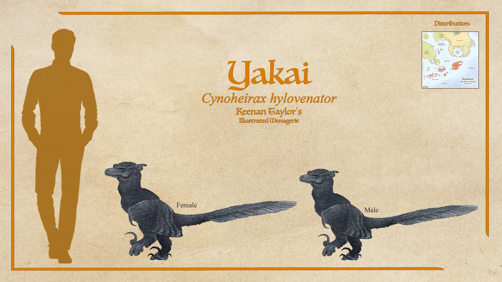
Cynohierax hylovenator sp.
Most widespread of the raptorial urvogels is the jackalbird or yakai. This genus has several species, with one throughout the southern islands, one in the forests of Arvel that has recolonized Qajar, in southern Kairul, and a recently discovered small species in Ni'Khar's northern forest. There may also be a species in Kaishel. It has spread so far thanks to more efficient flight than its relatives, and has a highly adaptable diet. They compete with numerous raptor species, though being crepuscular and preferring to hunt in evening or nocturnal conditions means they are more frequently up against owls instead of bathawks and eagles. In fact, large owls are quite rare in their range, and competitive pressures from jackalbirds are cited as a likely reason for this. They can be quite social, and sibling groups of males especially will often remain in the same territory, hunting together and sometimes with their mates. Female jackalbirds are particularly prone to traveling far before establishing a territory and choosing a mate. This behavior has been suggested as to why this genus has spread far, while others remain in Pakardia.
Read species article →Qadanith Jackalbird
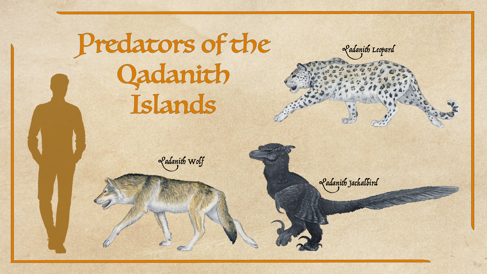
Cynohierax hylovenator sp.
The jackalbirds spread has also enabled it to grow large on some of the islands in the Khalin Sea. The Qadanith Jackalbird is much larger than their pakardiant relatives due to an absence in competion from cockatrices and even some birds of prey. It also makes them dangerous on the Qadanith Archipelago, as the can become as bold as cockatrice depending on their disposition.
Read species article →Nashu Jackalbird

Cynohierax hylovenator sp.
The firebird of Blackfish Island is a species of jackalbird called the nashu. They are black and slightly larger than their Pakardiant cousins, but still able to fly. They are nocturnal, being very proficient arboreal ambush predators. Felicity never saw one, but mentioned the nashu in numerous passages, and was even given one of their black feathers by the Ehyoke, who say this beast is one of their sacred protectors. The Blackfish spoke of the giant black firebird as a demon of formidable intelligence and cruelty, but the Ehyoke said this was just because the Kaimerans are not supposed to go inland, and the nashu are very protective of their home.
Read species article →Tamakai
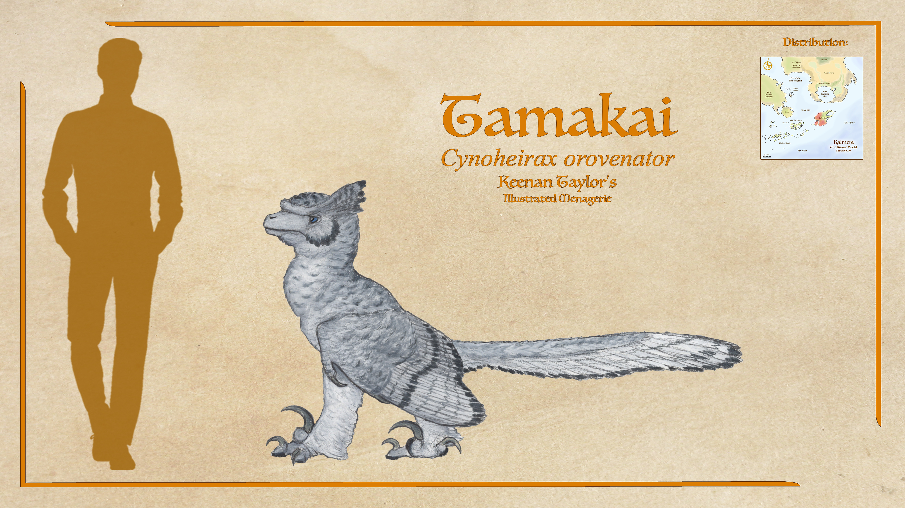
Cynohierax orovenator
The tamakai is a pale-feathered urvogel in the mountains of Pakardia. In its recent description by the Assembly, the tamakai is found to be a second Pakardiant species of jackalbird, Cynoheirax orovenator, though others argue they are distinct enough to warrant a unique genus, especially considering their range overlaps with jackalbirds yet no hybrids have been encountered. Though the highlands are poorly explored. They have been likened to snow leopards and golden eagles of Earth, hunting larger game like ibex, highland songdrakes, and woolly fabadonts by driving it off a cliff and letting gravity make the kill. They are larger than yakai jackalbirds, pushing the limits of aerobatically volant birds at up to forty-five pounds with the largest females, though most of both sexes are closer to thirty-five. Though all raptorial urvogels have flanged feather tips, which help them fly silently, this trait is especially exaggerated in the tamakai, flying as quiet as owls.
Read species article →Karakai
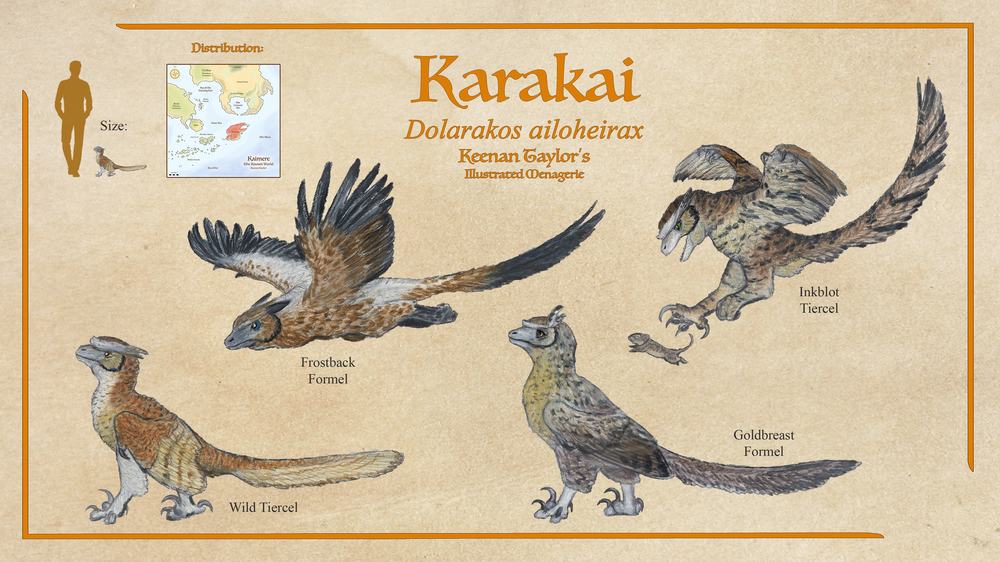
Dolorakos ailoheirax
Most abundant is the karakai. They are the smallest of the raptorial urvogels, and also the most social, with decentralized groups of dozens having overlapping ranges. They hunt small game, favoring small rodents, though have been seen bringing down prey several orders of magnitude above their five pound weight, especially when working in a group. Like others of their family, females or formels as they're called in falconry tend to be slightly larger, while males or tiercels have taller snouts, though their dimorphism has a lot of overlap so it's not always evident. They are highly intelligent and playful, contributing heavily to their reputation as tricksters, for which they are admired, especially by the firebird clan which uses them as a sigil. They are quite capable mimickers and understand words, though not on the same level as parrots that can understand and repeat dozens if not hundreds of words and sentences.
Read species article →Indrakai
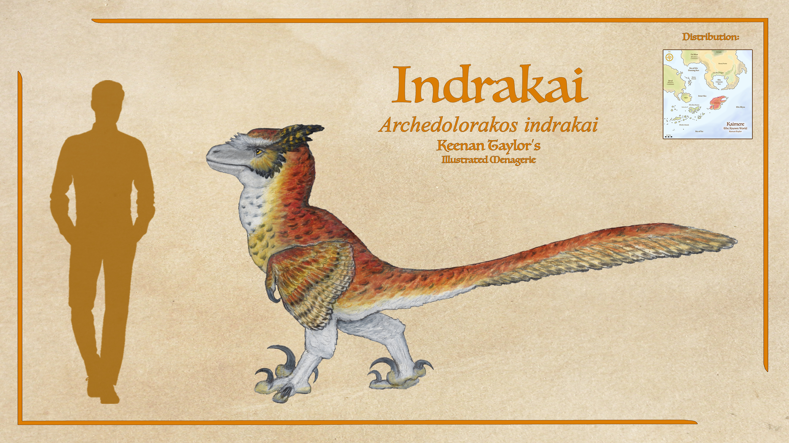
Archedolorakos indrakai
Only one species of Archedolorakos lives in modern Pakardia: the indrakai. These were originally a smaller species in the highlands, but over the past million years they have doubled in size, now standing nearly a meter at the hips and weighing between a hundred fifty and two hundred pounds. While they look quite similar to the wild morph of karakai compared to jackalbirds, leading to old classifications having these two as sister taxa, it seems this red and gold with dark spots and pale underparts is simply the basal coloration of raptorial urvogels, and the two aren't particularly close relatives. Indrakai are specialized ambush hunters. Though they hunt a range of prey, from large rodents and lagomorphs up to the occasional black sloth, their favorite prey is the trident deer and red elk. These cervids are extremely common in the forests of Pakardia, feeding on whatever fast-growing leaves and grasses first blossom in the wake of titanosaur gardening. Indrakai will often strike from above, aiming a powerful grasping kick to the lower back then rending the prey with bites to the neck. Indrakai are said to get bored, so will often explore other prey options, but they seem to always come back to deer as a staple.
Read species article →Moakai
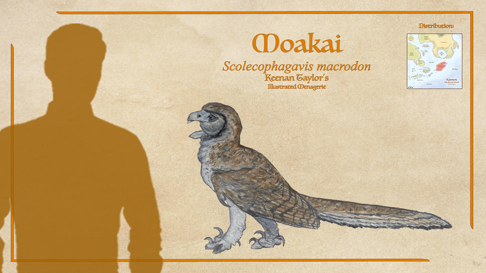
Scolecophagavis macrodon
The moakai is a species of firebird endemic to Pakardia that is a specialist of wood-boring insects like conifer mites and beetles.
Read species article →Penguin Raptors
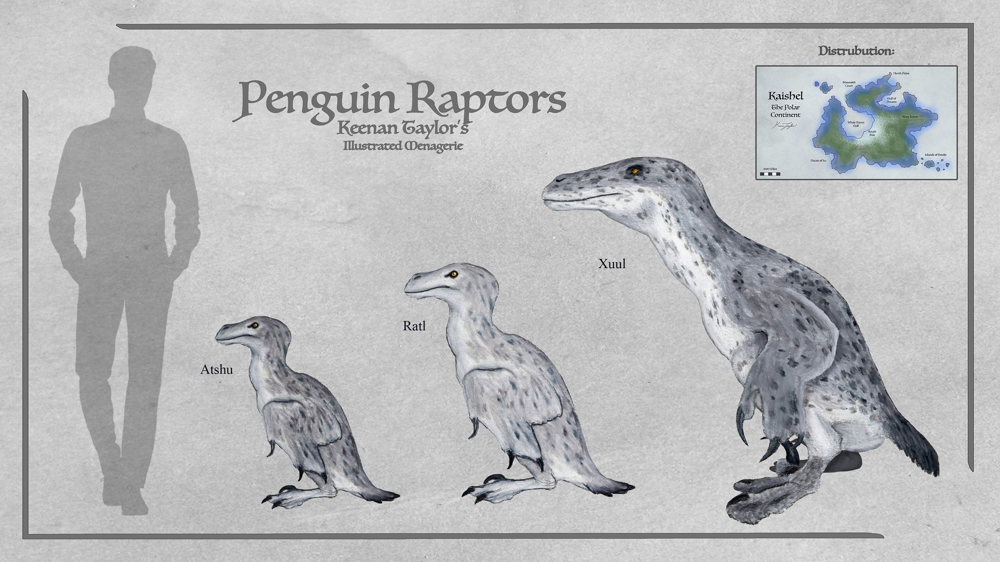
To be Added
Most phylogenetic studies find the 'penguin raptors' and their kin to be a sister tribe to the raptorial urvogels. Closer to them than to the Pakaridant grebes which share a similar foot anatomy between the two clades coming down to convergent evolution. The venom and macroraptorial diet of these birds certainly speaks to a closer relationship to the likes of jackalbirds and indrakai. They are marine hunters and use their venom to make swift kills not to avoid sounds in the silent forest but to make as little noise as possible that might attract other predators in the highly competitive coastal region. One of these animals and also amongst their largest, the xuul, has a small population in the known world.
Read Atshu article → Read Ratl article →Xuul
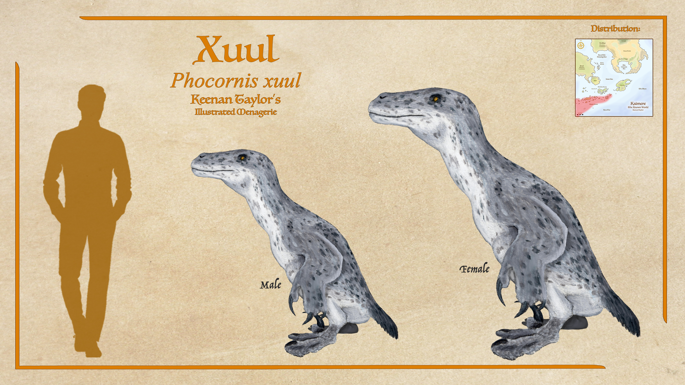
Phocornis xuul
When the xuul was first encountered by Akanuk whalers in the southern polar seas, they believed them strange demonic seals or the cursed souls of drowned men made flesh. After they were more regularly encountered, scavenging from harpooned whales or occasionally hunted, the whalers came to the correct conclusion that they were actually much closer in relation to the indrakai of their homeland to the north. The xuul is an aquatic firebird. Their genus, Phocornis, has several species, though they are by far the largest. Their build is poorly suited to swim in open water, though they are brutal and efficient killers of large game in the coastal waters, hunting seal, large fish, caribou, and people. Sometimes they migrate north to the known world during winter, following their prey. They must stick to the currents to compensate for their slow pace and poor endurance.
Read species article →04 · CLASSIFICATION
Taxonomic Notes
The classification of firebirds remains one of the more contentious subjects in Kaimeran vertebrate paleontology. Their anatomy combines features associated with several different groups of feathered dinosaurs, and their evolutionary relationships have been difficult to establish from the available fossil record.
Firebirds possess highly derived feathers, a pronounced sternal keel supporting powerful flight musculature, and numerous adaptations associated with powered flight. At the same time, many retain abundant teeth, elongated and relatively stiff bony tails, clawed forelimbs, and hindfeet unlike those of neornithine birds or enantiornithines. These combinations have complicated attempts to determine whether they represent a particularly primitive avian lineage, an unusual radiation of dromaeosaurs, or a group lying somewhere between the two.
Some naturalists have argued that firebirds should be classified among the Dromaeosauria, particularly given the similarities between their raptorial members and other predatory feathered dinosaurs. Others consider them more closely related to true birds, while a minority have proposed an origin among troodontid-like animals. The presence of venom, specialized grasping feet, and elaborate feather structures has further complicated comparisons, as these characteristics may represent adaptations to their particular ecological circumstances rather than reliable indicators of ancestry.
The prevailing interpretation is that Dolarakiformes represent a derived clade of stem birds, descended from a lineage resembling Archaeopteryx or another closely related Jurassic feathered dinosaur. Under this interpretation, many of their apparently primitive characteristics were retained from their ancestors, while other traits evolved independently in response to the demands of their environments.
Their ancestry is generally attributed to animals introduced into Kaimere during the Late Jurassic, approximately 145 million years ago, following the end of the planet's first Ice Age. These early firebirds are presumed to have originated in Kaishel, where the order subsequently diversified. The fossil record remains incomplete, however, and some lineages may have originated through later exchanges between Kaishel and Pakardia.
In the Known World, three principal firebird families are recognized. Dolarakidae, comprising the more basal raptorial and aquatic firebirds, including Dolarakinae and Limnedolarakinae. Pyropavidae, the phoenixes, a derived family of predominantly seed-eating firebirds characterized by toothless jaws and beak-like snouts. Additional aquatic and marine firebird lineages, including the penguin-raptors, which are generally considered closely related to the raptorial urvogels rather than to the Pakardiant grebes.
The division between these groups is not entirely settled. Some classifications place the penguin-raptors within or immediately adjacent to the raptorial firebirds, while others recognize them as a distinct sister lineage. Their aquatic adaptations are sufficiently specialized that their relationship to terrestrial firebirds has sometimes been obscured by similarities to unrelated diving birds.
The Pakardiant grebes, meanwhile, represent a separate aquatic radiation. Their similar hindfoot morphology is generally interpreted as convergent evolution rather than evidence of a particularly close relationship to the penguin-raptors.